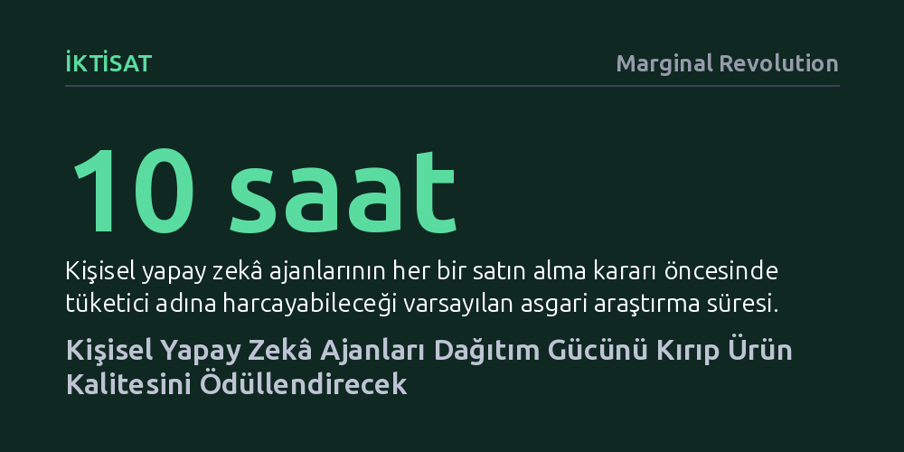

IKTISAT · Marginal Revolution · 2026-10-12
Kişisel yapay zekâ ajanları, şirketlerin tüketicilerin dikkatsizliği ve bilgi eksikliği üzerinden kurduğu bilişsel üstünlüğü sona erdirecek. Bu dönüşüm, pazarlama ve dağıtım kurnazlıkları yerine doğrudan ürün kalitesini ödüllendiren yeni bir piyasa dengesi yaratacak.
Yapay zekânın asıl devriminin üretkenlik artışından ziyade, şirketler karşısında dezavantajlı olan bireysel tüketicinin rasyonelliğini güçlendirip piyasadaki hileli kâr modellerini çökertmesi olabileceğini gösterir.

Piyasada faaliyet gösteren şirketler, uzun zamandır bir tür kolektif süper zekâ gibi işliyor. Kurumsal yapılar, ellerindeki ölçeklenmiş bilişsel fazlalığı kullanarak kendi çıkarlarını bireysel tüketicinin aleyhine olacak biçimde optimize etme konusunda son derece mahir. Buna karşılık sıradan tüketici; yorgun, dikkatsiz, kısıtlı zamana sahip ve eksik bilgilendirilmiş durumda. Herbert Simon’ın iktisat literatürüne kazandırdığı sınırlı rasyonellik kavramı, tam da bu dengesizliği tarif ediyor: Tüketici kusursuz hesaplamalar yapamadığı için şirketlerin kurduğu karmaşık tuzaklara düşüyor.
Bu durumun en bariz örneğini, bir bilet veya otel rezervasyonunun son adımında karşımıza çıkan ve piyasa değerinin çok üzerinde fiyatlandırılan ek sigorta tekliflerinde görürüz. Tüketici karar yorgunluğu yaşarken şirket, algoritması ve optimize edilmiş arayüzüyle o son adımı bir kâr kapısına dönüştürür. Ancak kişisel yapay zekâ ajanlarının tüketicinin safına geçmesiyle birlikte bu asimetri kökten sarsılmak üzere. Tüketici adına yorulmadan hesap yapan, her detayı inceleyen ajanlar, bireylerin şirketlerle olan müzakerelerinde nihayet rasyonel bir zemin yakalamasını sağlayacak.
Tüketicinin rasyonelleşmesi, şirketlerin alışılageldik kâr mekanizmalarını doğrudan işlevsiz kılacak. Bunların başında fiyat farklılaştırması geliyor. Örneğin indirim kuponları, yalnızca o kuponu aramak için zaman harcayan fiyata duyarlı kitleyi hedef alır. Fakat her tüketicinin ajanı internetin altını üstüne getirip o kuponu saniyeler içinde bulursa, kupon mekanizmasının ayrıştırıcı gücü kalmaz. Aynı şekilde, unutkanlık üzerine kurulu çapraz sübvansiyonlar da çökecektir; zira bugün spor salonu veya yazılım üyeliklerini iptal etmeyi unutan dağınık kitle, unutmayan dikkatli tüketicileri finanse ediyor.
Bir diğer büyük kırılma ise dikkat ekonomisi ve arama yönlendirmelerinde yaşanacak. İnternet devlerinin devasa gelir modelleri, tüketicinin dar dikkat süresine ve 'ilk gördüğüme tıklarım' kolaycılığına dayanıyor. Şirketler sırf üst sıralarda çıkabilmek veya arama motorunun değişken algoritmalarını tatmin edebilmek için devasa reklam bütçeleri harcıyor. Ajanlar ise arama sonuçlarındaki reklamlara veya ilk sıradaki yaldızlı kutulara aldanmayacağı için, dikkat yönlendirmesi üzerinden toplanan bu verimsiz rantlar erimeye mahkûm görünüyor.
Kurumsal strateji dünyasında uzun yıllardır süren kadim bir tartışma vardır: Dağıtım kanalları mı daha önemlidir, yoksa ürünün kalitesi mi? Bugüne dek harika bir ürün yapsanız bile, güçlü dağıtım ağlarına ve devasa pazarlama bütçelerine sahip devlerin gölgesinde kalmanız son derece olasıydı. Tüketici araştırmaya vakit ayıramadığı için alışıldık markayı seçmeye devam ediyordu. Oysa kişisel ajanlar, ürün kalitesi lehine yapısal bir teşvik gibi çalışacak. Tüketicilerin her alışveriş öncesinde en az 10 saatlik kapsamlı bir araştırma yaptığı bir dünyada, pazarlama numaraları değil, yalnızca daha iyi ürün üretmek kazandıracak.
Bu durum, piyasanın ödül mekanizmasını kökten değiştirecektir. Piyasa özünde devasa, merkezsiz ve kusurlu bir değer atama makinesidir. Yapay zekâ ajanları, bu sistemin geriye yayılım dinamiğini dönüştürerek ödülü nihayet gerçekten kaliteli ürün üretenlere aktarabilir. Ürettiği şeyle gurur duyan, işini iyi yapan girişimciler, evrenin nihayet kendi lehlerine hizalandığını hissetmeye başlayabilir. Zekânın ucuzlamasıyla birlikte, ürün kalitesine dair bağımsız ve güvenilir veri sinyalleri de hiç olmadığı kadar değerli hale gelecektir.
Tüm bu dönüşümün karşısında yanıt bekleyen iki kritik soru bulunuyor. İlki, rasyonel ajanların piyasada tek bir lider ürüne odaklanıp süperstar etkilerini mi artıracağı, yoksa insanların farklı zevklerini keşfederek çeşitliliği mi patlatacağıdır. Eğer herkesin ajanı tek bir ürünü en iyi ilan ederse piyasa aşırı tekelleşebilir. Ancak ajanlar bireylerin özgün tercihlerini derinlemesine kavrayabilirse, geçmişte maruz kaldığımız yapay tek tipleşme kırılacak ve daha niş, özgün pazarlar doğacaktır.
En belirleyici varsayım ise kişisel ajanların sahiden tüketicinin yanında saf tutup tutmayacağıdır. Ajanların tüketici menfaatini öncelemesi uzun vadede kazanan iş modeli gibi görünse de, bu yazılımların büyük teknoloji platformları tarafından yönlendirilmesi veya gizli komisyonlarla manipüle edilmesi riski her zaman masada duruyor. Şayet ajanlar bağımsız kalmayı başarabilirse, piyasa dengesi ilk kez kurumsal devlerden sıradan bireylerin lehine dönecektir.